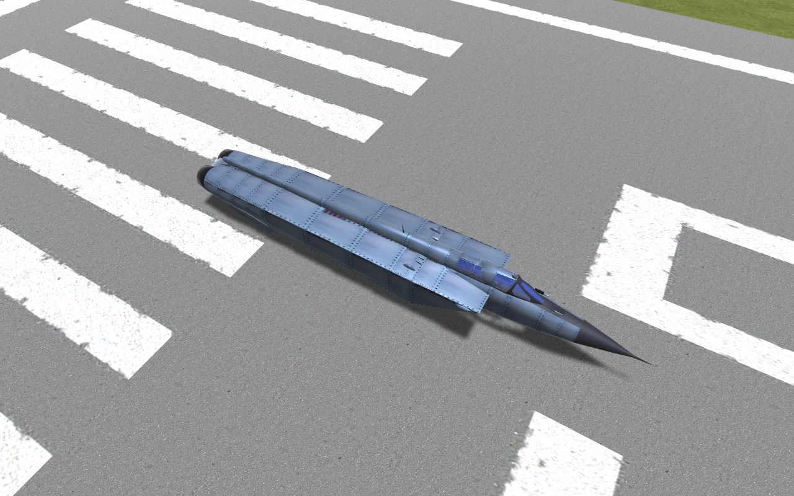
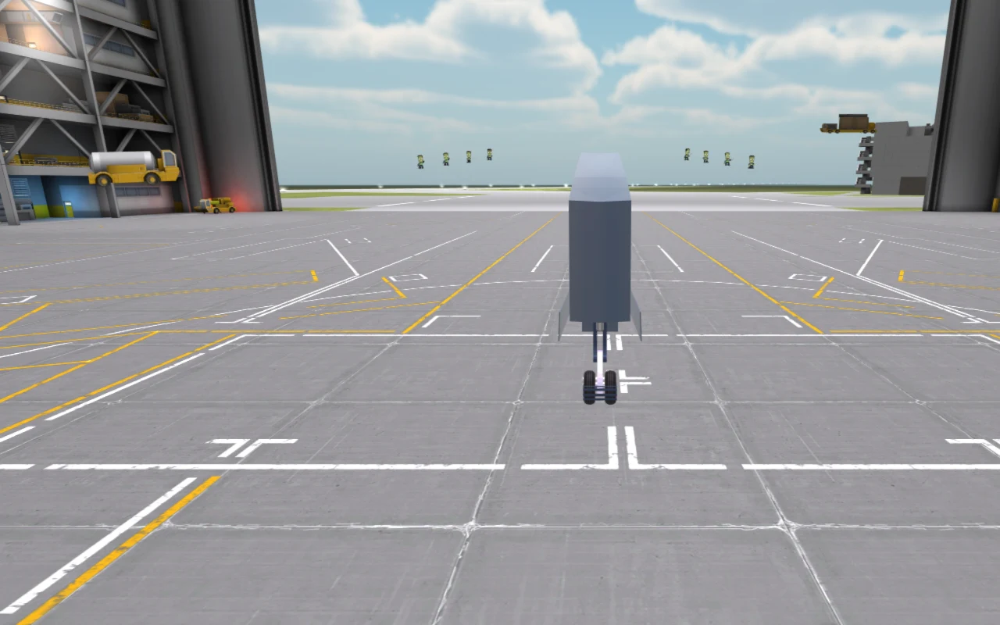
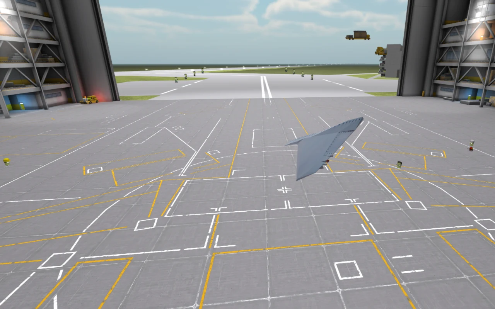
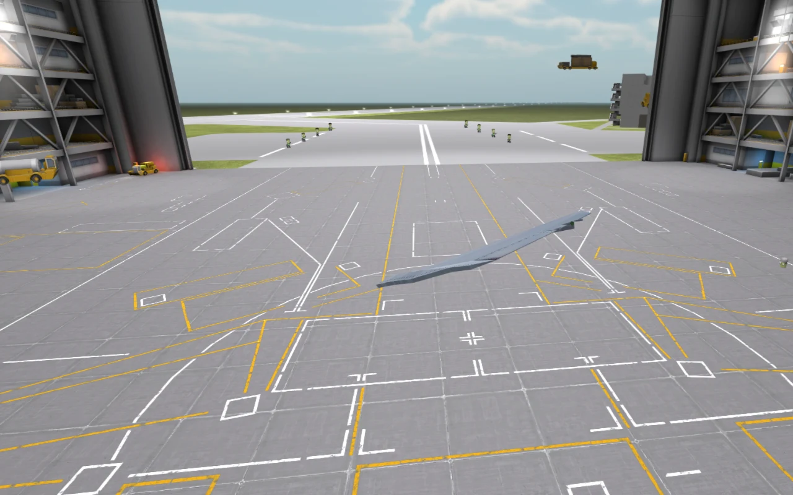
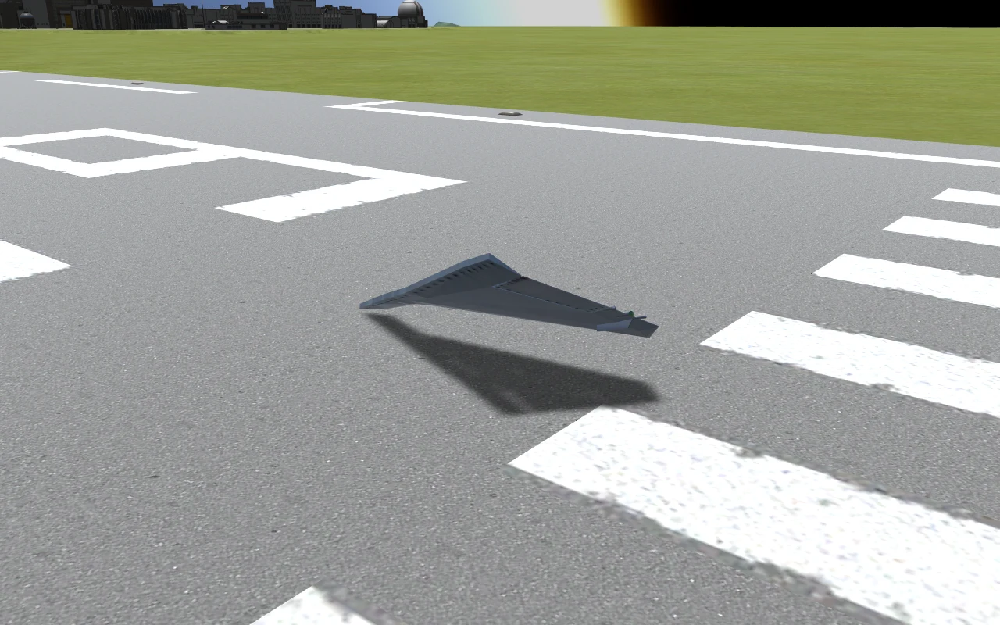
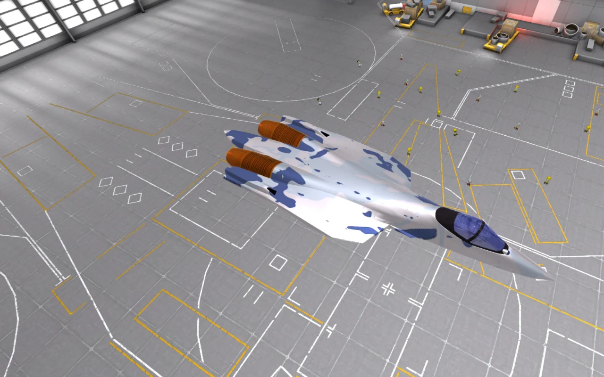
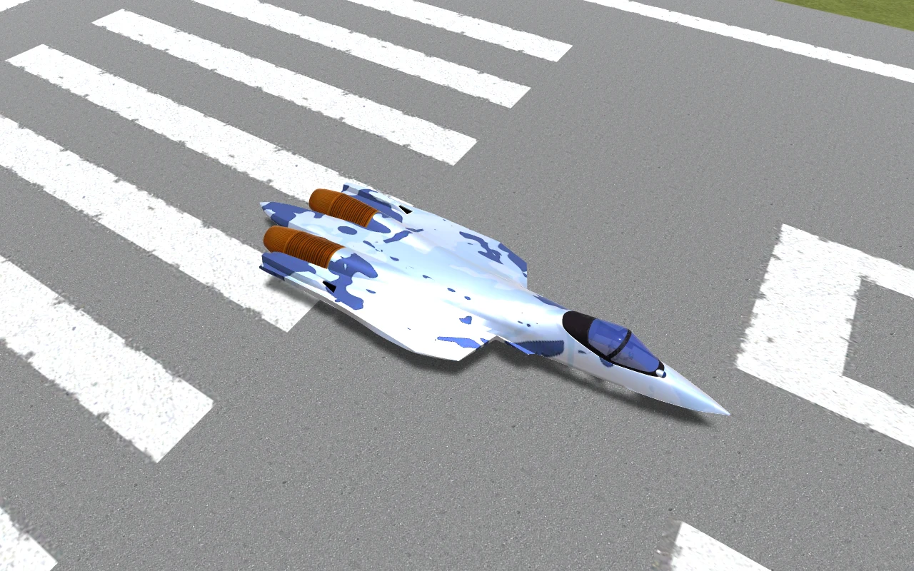

ShineFix home
← Back to supported mods
ColdJ's Military Planes Soviet
Optics verified
Human tested
Version 1.0.1
Compatibility evidence
Original screenshot gallery
Parts
Mig-31 Foxhound Body

Mig-31 Front Gear

Mig-31 Rudder Left

Mig-31 Rudder Right


SU-57 Felon Body


SU-57 Front Gear